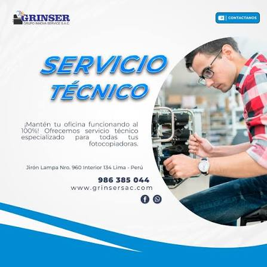

Diagnóstico claroRevisamos el equipo y te orientamos sobre el siguiente paso.
Servicio técnico especializado
Tu equipo en buenas manos.
Diagnóstico, reparación y mantenimiento para fotocopiadoras y equipos de impresión. Nuestro equipo te ayuda a reducir interrupciones y mantener tu negocio en marcha.
- Atención para distintas marcas
- Técnicos con experiencia
- Repuestos y mantenimiento
- Soporte para empresas

Mantenimiento preventivoAyudamos a cuidar el rendimiento y la vida útil de tus equipos.
Atención personalizadaCuéntanos tu caso para coordinar la atención adecuada.
¿Buscas consumibles o repuestos?
Explorar productos